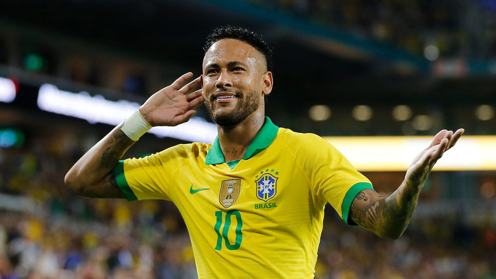

Neymar
Brazilian football player

- da Silva Santos Júnior (born 5 February 1992), known as Neymar,
is a Brazilian professional footballer who plays as a forward for Ligue
1 club Paris Saint-Germain and the Brazil national team.
- A prolific goalscorer and renowned playmaker,
he is regarded as one of the best players in the world.
- Neymar has scored at least 100
goals for three different clubs,
making him one of three players to achieve this.
- Neymar came into prominence at Santos,
where he made his professional debut aged 17.
He helped the club win two successive Campeonato Paulista championships,
a Copa do Brasil, and the 2011 Copa Libertadores;
the latter being Santos' first since 1963.
- Neymar was twice named the South American Footballer of the Year,
in 2011 and 2012, and soon relocated to Europe to join Barcelona.
As part of Barcelona's attacking trio with Lionel Messi and Luis Suárez,
dubbed MSN, he won the continental treble of La Liga,
the Copa del Rey, and the UEFA Champions League.
- then attained a domestic double in the 2015–16 season.
Motivated to be a talisman at club level,
Neymar transferred to PSG in 2017[9] in a move worth €222 million,
making him the most expensive player ever.
- In France, he won four league titles, among other honours,
and was voted Ligue 1 Player of the Year in his debut season.
[12] Notably, he helped PSG attain a domestic quadruple in the 2019–20 season,
and led the club to its first ever Champions League Final.
- 75 goals in 121 matches for Brazil since debuting at age 18,
Neymar is the second highest goalscorer for his national team, trailing Pelé.
- At his youth stage for Brazil, he was a key player in the victory at the 2011
South American Youth Championship, where he finished as leading goalscorer,
and also attained a silver medal in men's football at the 2012 Summer Olympics.
- The following year, he won the 2013 FIFA Confederations Cup, winning the Golden Ball.
His participation in the 2014 FIFA World Cup and 2015 Copa América was cut short by injury
and a suspension, respectively, before captaining Brazil to their first Olympic gold medal in
men's football at the 2016 Summer Olympics.
- Having renounced the captaincy, he featured at the 2018 World Cup,
and after missing the 2019 Copa América through injury, helped Brazil to a runner-up finish at the 2021
tournament.